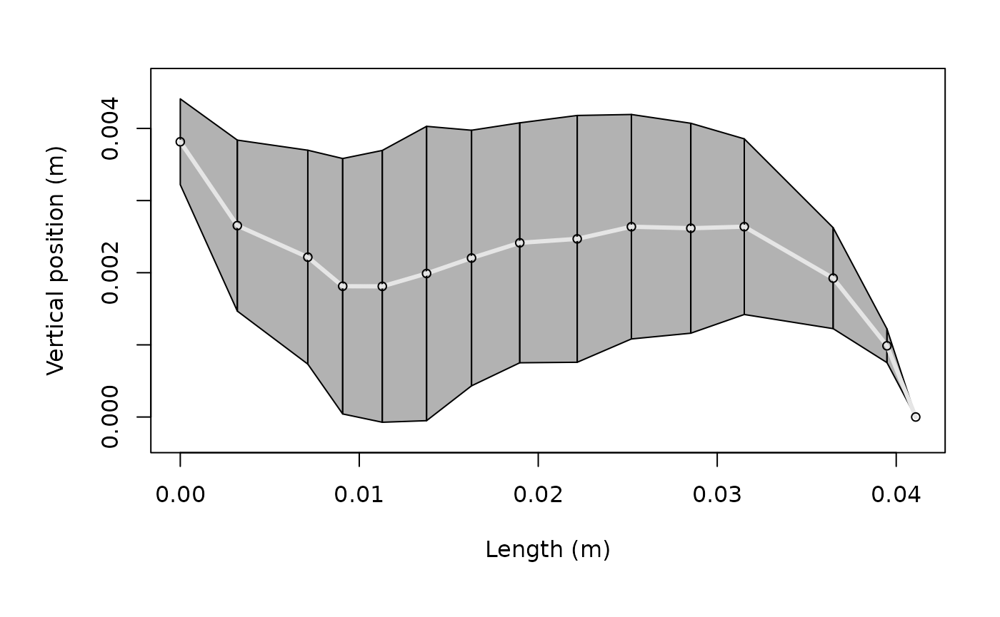

Overview
acousticTS includes three example scatterers and one
collection of benchmark results. They provide known inputs for learning
package workflows, comparing models, and checking calculations before
working with custom targets.

Included data
| Object | Contents | Primary use |
|---|---|---|
sardine |
An SBF scatterer with separate body and swimbladder
components, based on the NOAA KRM and echoSMs resources
(Southwest
Fisheries Science Center 2022). |
Composite fish workflows. |
cod |
An SBF scatterer representing the Cod D case, with
separate body and swimbladder components (Clay and Horne 1994; Southwest Fisheries Science Center
2022). |
Composite fish workflows and KRM comparisons. |
krill |
An FLS scatterer based on the krill geometry of McGehee
et al. (1998) (McGehee et al. 1998). |
Fluid-like, elongated-body models. |
benchmark_ts |
Stored target-strength spectra for canonical benchmark cases from Jech et al. (2015) (Jech et al. 2015; Macaulay and contributors 2024). | Validation and regression checks. |
The first three objects are S4 scatterers that contain geometry,
physical properties, orientation, metadata, and containers for model
parameters and results. benchmark_ts is a list of reference
outputs, not a scatterer. The linked reference pages document each
object’s complete structure and provenance.
Loading and inspecting an object
Load a dataset explicitly with data(), then use the same
inspection methods available for other package objects:
library(acousticTS)
data("krill", package = "acousticTS")
class(krill)## [1] "FLS"
## attr(,"package")
## [1] "acousticTS"
plot(krill)
Use sardine or cod to examine
body-and-swimbladder targets. Use krill for a single
fluid-like body. Use benchmark_ts when reproducing a
documented benchmark under the same model assumptions, frequency grid,
and numerical settings.
These objects support examples and validation. They are not substitutes for checking the geometry, material properties, orientation, and model assumptions required by a new scientific application.